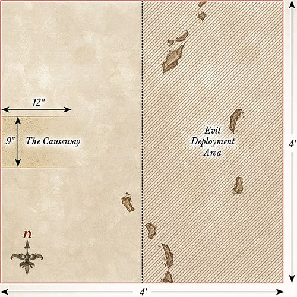

War in Rohan
BURNING OF THE WESTFOLD
LAYOUT
The board represents one of the many villages that make up the Westfold of Rohan and, as such, should have a selection of houses, fences, and hedges dotted around the board. There should be a total of seven Rohan houses on the board, one in the center and three in each of the eastern and western board halves.
STARTING POSITIONS
The Good player splits their force into two equal halves, each containing one Captain. They then deploy one half anywhere within the western half of the board, and within 3" of any Rohan houses. They then deploy the other half anywhere within the eastern half of the board, but within 3" of any Rohan houses. The Evil player then deploys The Wild Man Oathmaker and the Wild Men of Dunland anywhere within 6" of either the northern or southern board edge. The rest of the Evil models will become available as the game progresses.
OBJECTIVES
The Dunlendings are determined to take revenge on the Rohirrim and plan on burning their lands one settlement at a time. The Rohirrim must fend off their attackers and protect their homes from these invaders. The game lasts for 10 turns. If at the end of 10 turns, less than half of the Rohan houses are on fire, the Good player is the winner. If at the end of 10 turns, more than half of the Rohan houses are on fire, the Evil player is the winner.
Any Good model that ends its move in base contact with a Rohan house that is on fire may attempt to put it out. Roll a D6, on the roll of a 6 the fire has been put out. However, should the Good player roll a 1, then the house will be consumed by flames and cannot be put out for the remainder of the game.
SPECIAL RULES
- Warn the King
Once the Good side has been reduced to 50% or fewer of its starting models, any Captain of Rohan may try to escape the board to deliver news to Théoden. Should a Captain of Rohan escape the board via any table edge, the best result the Evil side can achieve is a draw.
- Torching Buildings
Any Dunlending model that ends its move in base contact with a Rohan house during the Move phase can attempt to set it alight. Roll a D6, on a 5+ the building has been set alight.
- Put the Fires Out!
Any Good model that ends its move in base contact with a Rohan house that is on fire may attempt to put it out. Roll a D6, on a 6 the fire has been put out. However, if a 1 is rolled, the house will be consumed by flames and cannot be put out for the remainder of the game.
- Dunlending Reinforcements
At the end of the Evil player's first Move phase, they may roll a D6 for each Dunlending model not yet in play. On a 3+, that model may enter play from any point on any board edge via the rules for Reinforcements. On a 1-2, that model may roll again on the following turn, adding 1 to the result.
PARTICIPANTS
Good: 2 Captains of Rohan with shield; 24 Warriors of Rohan: 8 with shield, 8 with throwing spear & shield, 8 with bow.
Evil: Gorûlf Ironskin; Frida Tallspear; The Wild Man Oathmaker; 12 Wild Men of Dunland; 6 Dunlending Warriors with shield; 6 Dunlending Warriors with bow; 6 Dunlending Huscarls.
FIRST BATTLE OF THE FORDS OF ISEN
LAYOUT
The board represents the Fords of Isen. There should be a river that is 6" wide flowing down the center of the board from north to south. In the middle of the river is the ford, a 6" wide area in the center of the river that can be crossed as normal. The rest of the board is mainly bare fields with the odd bush, hedge, or tree dotted around.
STARTING POSITIONS
The Good player deploys Théodred on the eastern side of the river Isen as close to the center of the board as possible. The Good player then deploys the 12 Warriors of Rohan (see Participants) on the eastern side of the river and within 6" of Théodred. The Good player then deploys Grimbold and the Helmingas within 12" of the eastern board edge. The Evil player then deploys their entire force within 18" of the western board edge. All other models are kept aside until later.
OBJECTIVES
The forces of Saruman have been tasked with slaying the young prince and securing the fords, allowing Saruman's armies an easier route into Rohan. The game lasts for 12 turns. The Evil player wins if they can slay Théodred and get 12 or more models onto the eastern side of the board by the time the game ends. The Good player wins if they can prevent both of these from happening. If the Evil player only completes one of their objectives, the game is a draw.
SPECIAL RULES
- The River Isen
The river is counted as deep water for all purposes.
- Théodred's Doom
Evil models must re-roll failed To Wound rolls against Théodred in the Fight phase.
- Elfhelm
During the End phase of each turn, the Good player must roll a D6 and add the turn number to the result. If the result is 8 or more, Elfhelm and the remaining Good models will arrive at the end of the Good player's next Move phase from the eastern board edge via the rules for Reinforcements.
PARTICIPANTS
Good: Théodred, Heir of Rohan with horse and shield; Elfhelm, Captain of Rohan with horse; Grimbold of Grimslade; 12 Riders of Rohan: 4 with throwing spears, 8 with no additional equipment; 24 Warriors of Rohan: 8 with shield, 8 with throwing spear and shield, 8 with bow (half of the Warriors of Rohan may be upgraded to be Helmingas); 3 Rohan Outriders on horse.
Evil: Vraskû; Thrydan Wolfsbane; 24 Uruk-hai Scouts: 8 with Uruk-hai bow, 8 with shield, 8 with no additional equipment; 9 Dunlending Warriors: 3 with shield, 3 with two-handed axe, 3 with bow; 6 Warg Riders: 2 with shield, 2 with Orc bow, 2 with throwing spears.
SECOND BATTLE OF THE FORDS OF ISEN
LAYOUT
The board represents the Fords of Isen. There should be a river that is 6" wide flowing down the center of the board from north to south. In the middle of the river is the ford, a 6" wide area in the center of the river that can be crossed as normal. The rest of the board is mainly bare fields with the odd bush, hedge, or tree dotted around.
STARTING POSITIONS
The Good player deploys Grimbold in the center of the board and then deploys their Infantry models within 6" of Grimbold. The Good player then deploys their Cavalry models within 6" of the center of the eastern board edge. The Evil player deploys their Infantry models within 12" of the western side of the board. They then deploy their Cavalry models within 6" of either point shown on the map. These are the points 12" from the eastern board edge on the northern and southern board edges.
OBJECTIVES
The Rohirrim are trying to hold the ford against the might of Saruman's armies and prevent them from securing an easier route into Rohan.
The game lasts for 10 turns. Whichever side has more models on the ford at the end of the game is the winner.
SPECIAL RULES
- The River Isen
The river is counted as deep water for all purposes.
- Defend the Ford!
Rohan models re-roll 1s To Wound in the Fight phase whilst they are on the ford.
PARTICIPANTS
Good: Elfhelm, Captain of Rohan with horse; Grimbold of Grimslade; 12 Riders of Rohan: 4 with throwing spears, 8 with no additional equipment; 24 Warriors of Rohan: 8 with shield, 8 with throwing spear & shield, 8 with bow (half of the Warriors of Rohan may be upgraded to be Helmingas); 3 Rohan Outriders on horse.
Evil: Uruk-hai Captain with shield; Thrydan Wolfsbane with horse; Gorûlf Ironskin; 24 Uruk-hai Warriors: 10 with pike, 10 with shield, 4 with crossbow; 9 Dunlending Warriors: 3 with shield, 3 with two-handed axe, 3 with bow; 6 Warg Riders: 2 with shield, 2 with Orc bow, 2 with throwing spears; 6 Dunlending Horsemen.
AMBUSH AT NIGHT
LAYOUT
The board represents the plains by the edges of Fangorn Forest. The northern board edge is the boundary of the forest and so should be lined with trees. In the center of the board is a campfire. The rest of the board is grassland and mainly bare.
STARTING POSITIONS
The Good player deploys Merry and Pippin as close to the center of the board as possible, as shown on the map. The Evil player then deploys Grishnákh 3" away from the Hobbits towards the southern board edge. The Evil player then deploys the rest of their force anywhere within 6" of the campfire. The Good player then splits their force into two equal parts, each including one Hero. One half is deployed within 6" of the eastern board edge, the other within 6" of the western board edge.
OBJECTIVES
The Rohirrim have caught the Uruk-hai off-guard and are intent on ridding their lands of these invaders. Yet even as the Rohirrim and Uruk-hai skirmish with each other, Merry and Pippin are trying to escape, making for the safety of Fangorn.
The game lasts until one force has been reduced to 25% of its starting numbers and either the Hobbits have escaped the board via the northern board edge or been slain. The Good side wins if they have killed 75% or more of the Evil force. The Evil force wins if they kill 75% of the Good force. If either Merry or Pippin are slain, the best result the Good side can achieve is a draw.
SPECIAL RULES
- Surprise Attack
Evil models may not move during the first turn of the game.
- Merry and Pippin
Merry and Pippin begin the game Prone and bound. They may only move by crawling, however, they may crawl 2" per turn rather than 1". They may not Charge enemy models and may not be charged by enemy models (the Uruk-hai have other things to worry about after all!). The Hobbits do not have a Control Zone in this game and may move through an enemy model's Control Zones without penalty. The Hobbits may also move through other models as if they were not there so long as they end their move with no part of their base overlapping another model. Other models may move through the Hobbits in the same way we assume they either walk over them or push them out of the way.
- Their Bonds were Cut
At the end of each of Merry's and Pippin's move, they roll a D6 for each Hobbit. On a 6, they cut their bonds and are no longer Prone. They may move their full Move allowance from this point onwards.
- Grishnákh
Grishnákh follows the same rules for movement as the Hobbits, except that he moves 3" when crawling and cannot cut his bonds, as he is not bound. Grishnákh is the only model that may charge the Hobbits, and will Fight them in the Fight phase if he does so. If Grishnákh is fighting one of the Hobbits, both models will fight as normal even though they are Prone, ignoring any rules for fighting whilst Prone. Additionally, as he is wounded, Grishnákh starts the game with only a single point of Might and only has 1 Attack.
PARTICIPANTS
Good: omer, Marshall of the Riddermark with horse; Meriadoc Brandybuck; Peregrin Took; Captain of Rohan with horse and shield; 12 Riders of Rohan: 4 with throwing spears, 8 with no additional equipment; 3 Rohan Outriders on horse.
Evil: Uglúk; Mauhúr; Grishnákh, Orc Captain; Snaga, Orc Captain; 12 Uruk-hai Scouts: 4 with Uruk-hai bow, 4 with shield, 4 with no additional wargear; 12 Orc Warriors: 4 with shield, 4 with spear, 2 with Orc bow, 2 with two-handed weapon.
GRISHNÁKH'S END
SET-UP
For this mini-game, you will require a deck of ordinary playing cards, Merry and Pippin, Grishnákh, Treebeard, and a 2'x2' playing space. The board represents the forest of Fangorn and should have plenty of trees on it. Shuffle the cards and place them in a pile face-down next to the board.
The Good player deploys Merry and Pippin in the center of the board and then deploys Treebeard touching the center of the eastern board edge. The Evil player then deploys Grishnákh touching the center of the western board edge.
OBJECTIVE
The game lasts until either Grishnákh has been slain, or both Hobbits have been slain. If, at the end of the game, Grishnákh has managed to kill both Hobbits, the Evil player wins. If none of the Hobbits have been slain, the Good player is the winner. Any other result is a draw.
GAME TURN
This mini-game is unusual in that it still uses some elements from the core rules as well as the extra rules presented here. All models will still use their profile as found in Armies of The Lord of the Rings.
At the beginning of each turn, the Good player moves the Hobbits. To move a Hobbit, the Good player flips over the top card from the deck, halves the number shown (rounding up), and moves the Hobbit up to that many inches picture cards will be covered later. Treebeard does not act yet; he is still asleep and will need to be woken up by the Hobbits before he may participate in this game.
The Evil player then moves Grishnákh in the same way as the Hobbits, with the exception that he may add 1" to the total number of inches moved when he flips a card over.
Should the move of any model take them into base contact with an enemy, they will fight them as normal during the Fight phase.
If at any point there are no cards left in the deck, shuffle the cards and start again.
EXTRA RULES
Picture Cards When a picture card (King, Queen, or Jack) is flipped over, the model that flipped it may perform a special action instead of moving. There is one set of special actions for the Hobbits and one for Grishnákh. If they decide not to use a special action, shuffle the card back into the deck and draw again.
Injured As Grishnákh was wounded in the encounter with the Rohirrim, he starts the game with only a single Might point.
HOBBIT SPECIAL ACTIONS
- Throw Stone: The Hobbit may throw a stone at Grishnákh using the Throw Stones (range 8", Strength 1) special rule.
- Climb Treebeard: If the Hobbit is in base contact with Treebeard, they may climb him. Grishnákh may not attack the Hobbit whilst they are in the tree.
- Wake Treebeard: If the Hobbit has climbed Treebeard, they may wake him up. If they do this, Treebeard is roused and may act as normal using the standard Strategy Battle Game rules.
GRISHNKH'S SPECIAL ACTIONS
- Sprint: Grishnákh may move 6" this turn.
- Grab Hobbit: If Grishnákh is in base contact with Treebeard, and a Hobbit has climbed the Ent, Grishnákh may pull them to the floor. Grishnákh may then fight the Hobbit in the following Fight phase.

THE WHITE WIZARD
SET-UP
For this mini-game, you will require a deck of ordinary playing cards, Gandalf the White, Théoden, King of Rohan, and Saruman. Separate the cards into the four suits and then give the Diamonds to the Good player and the Spades to the Evil player. Next, lay out the Hearts from Ace to Nine as shown above. The Clubs are not used in this game.
The Good player places Gandalf on the Ace of Hearts, then the Evil player places Saruman on the Nine of Hearts. Théoden is placed on the Five of Hearts.
OBJECTIVE
The first player to move Théoden onto the same card as their Wizard is the winner.
GAME TURN
At the beginning of each turn, players engage in a duel of wits. Both players simultaneously play one card from their hand face-down. Both players then reveal their cards and compare the types of card they have played. Each card will be one of three types of power: Offensive, Defensive, or Manipulation. Each of these types will beat one other type of power and lose to the other. Offensive powers beat Manipulation powers, Defensive powers beat Offensive powers, and Manipulation powers beat Defensive powers.
After the cards have been revealed, compare the cards to find a winner. In the case of a draw, both cards are discarded and players start the turn again.
Whichever player wins the duel of wits may move Théoden one card closer to their Wizard and then implement the effects of their card. A list of card effects is given on the right.
Both players then discard their cards, the turn ends, and the next turn begins. If at any point a player has no cards remaining, they pick up all the cards in their discard pile and start again.
EXTRA RULES
Here are the effects and power type of each card:
- A (Offensive): No further effects.
- 2 (Defensive): No further effects.
- 3 (Manipulation): No further effects.
- 4 (Offensive): Your opponent must show you their hand.
- 5 (Defensive): Take a card of your choice from your discard pile.
- 6 (Manipulation): Your opponent must swap one card in their hand for one in their discard pile.
- 7 (Offensive): Your opponent must discard a card of their choice from their hand.
- 8 (Defensive): In the next turn, Théoden cannot move closer to your opponent.
- 9 (Manipulation): Your opponent must choose their next card at random.
- 10 (Offensive): Your opponent must discard a card from their hand at random.
- J (Defensive): For the next two turns, Théoden cannot move closer to your opponent.
- Q (Manipulation): Move Théoden one additional space closer to your Wizard.
- K (Offensive): Pick a card; your opponent cannot play that card next turn.
The contents of the discard pile are common knowledge; you will need to use all of your cunning and wits in order to stay one step ahead of your opponent!
WARG ATTACK
LAYOUT
The board represents the hills and plains the Rohirrim travel across on their way to Helm's Deep and, as such, should have a few hills, rocky outcrops, and hedges dotted around.
STARTING POSITIONS
The Good player deploys Háma in the center of the board, and then deploys Gamling within 3" of Háma in the eastern board half. The Evil player deploys the Orc Captain and two Warg Riders of their choice within 3" of Háma in the western board half. All other models are kept aside for later in the game.
OBJECTIVES
Théoden commands his men to protect his people from the attack of the Warg Riders, who have been sent to kill as many of the Rohirrim and their leaders as they can. The game lasts for 12 turns. The Evil player wins if they can slay any three Good Hero models. The Good player wins if they can prevent this.
SPECIAL RULES
- Surprise Attack
The Evil player automatically has Priority on the first turn of the game, and the Good player may not declare any Heroic Actions in the first turn of the game. Additionally, Evil Cavalry models gain a bonus of +1 to their Fight value in a turn in which they Charge.
- Háma
Háma starts the game Prone and with only a single point of Might.
- To Battle!
At the end of each player's Move phase, they roll a D6 for each model not currently on the board. On a 3+ that model may enter the board. Good models enter from any point on the eastern board edge; Evil models enter from any point on the western board edge.
- Gimli
Gimli starts the game as a passenger on Legolas' horse.
PARTICIPANTS
Good: Théoden, King of Rohan with horse; Aragorn Strider with horse; Legolas Greenleaf with horse; Gimli, son of Glóin; Gamling, Captain of Rohan with horse; Háma, Captain of Rohan; 6 Riders of Rohan: 2 with shield, 2 with throwing spear, 2 with no additional equipment.
Evil: Sharku with Warg; Orc Captain on Warg; 18 Warg Riders: 6 with shield, 6 with Orc bow, 6 with throwing spear.
RAISE THE LADDERS
LAYOUT
The board represents the Deeping Wall and the lands in front of it. The area within 6" of the western board edge is the Deeping Wall itself, which should be the same height as the siege ladders. The rest of the board is barren and plain, making it easy for the Uruk-hai to navigate.
STARTING POSITIONS
The Good player deploys their force on top of the Deeping Wall. The Evil player then deploys their force anywhere within the eastern half of the board.
OBJECTIVES
The Uruk-hai must raise the ladders in order to get atop the walls and begin the assault on Helm's Deep, while those atop the walls must try to prevent the Uruk-hai from raising the ladders and knock down the ones that are placed up.
The game lasts for 12 turns. The Good player wins if at the end of the 12th turn there are two or fewer ladders up against the walls.
The Evil player wins if at the end of the 12th turn there are four or more ladders up against the walls. Any other result is a draw.
SPECIAL RULES
- Ladders
Siege Ladders are Heavy Objects that require four or more models to move them at full speed rather than two. They have no Defence characteristic and so cannot be targeted or damaged by shooting or in combat. If a Siege Ladder is moved within 3" of the Deeping Wall, it can be raised up against the walls. An Uruk-hai at the base of an upright ladder may move up it at full speed, and may even charge after climbing the ladder if able to do so.
- Berserkers
When a Siege Ladder is raised, a single Uruk-hai Berserker within 1" of the ladder may be raised with it. Place the Berserker in base contact with the walls next to the point where the ladder was raised; it may then act as normal. If the Berserker cannot be placed on the walls, then it is placed at the top of the ladder in combat with any models preventing it from being placed on the walls. The Berserker will count as defending an elevated position in this case.
- Knocking Down Ladders
Ladders can be pushed down as described on page 122 of the main rules manual. Models that were on a ladder that is pushed down will suffer falling damage as normal.
PARTICIPANTS
Good: Aragorn Strider with armor; Legolas Greenleaf with armor; Gimli, son of Glóin; Aldor; Haleth, son of Háma; Haldir with heavy armor and Elf bow; 24 Warriors of Rohan: 8 with shield, 8 with throwing spear, 8 with bow; 12 Galadhrim Warriors: 4 with spear & shield, 4 with Elf bow, 4 with no additional equipment.
Evil: 4 Uruk-hai Captains with shield; 32 Uruk-hai Warriors: 10 with shield, 10 with pike, 12 with crossbow; 16 Uruk-hai Berserkers; 5 siege ladders.
THE WALLS OF HELM'S DEEP
LAYOUT
The board represents the battlements of Helm's Deep and the siege ladders propped up against the Deeping Wall. The area within 9" of the western board edge is the battlements, and so should be relatively clear. There are five siege ladders in this battle, spaced out as shown on the map. The area within 3" of the eastern board edge represents the fields outside Helm's Deep and it is rather a long way down!
STARTING POSITIONS
The Good player deploys all of their models within 6" of the western board edge. The Evil player then deploys their models within 1" of the Siege Ladders.
OBJECTIVES
The Uruk-hai have made it onto the battlements of Helm's Deep, and now the Men and Elves must fight to prevent the walls from being overrun. If they can stem the tide of Uruk-hai, the battle may swing in their favor.
The game lasts for 12 turns. The Good side wins if at the end of 12 turns they have managed to kill 35 or more Evil models (it's important to keep track). The Evil side wins if they can prevent this. If Aragorn dies, the best result the Good side can achieve is a draw.
SPECIAL RULES
- Numbers Beyond Count
Each time an Uruk-hai Warrior is slain, keep it to one side. At the end of each Evil Move phase, any models kept aside in this manner may move onto the board from the siege ladders. Models that arrive in this way may Charge in the turn in which they arrive. Any models that cannot move onto the board in this way are kept aside for the next turn.
- Battlements of Helm's Deep
The eastern edge of the Deeping Wall is lined with battlements that can trap a model against them. Additionally, a model that is pushed from the battlements and onto the ground below is automatically slain it's a rather steep fall!
PARTICIPANTS
Good: Aragorn Strider with armor; Legolas Greenleaf with armor; Gimli, son of Glóin; Aldor; Haleth, son of Háma; Haldir with heavy armor & Elf bow; 12 Warriors of Rohan: 4 with shield, 4 with throwing spear, 4 with bow; 12 Galadhrim Warriors: 4 with spear & shield, 4 with Elf bow, 4 with no additional equipment.
Evil: 4 Uruk-hai Captains with shield; 20 Uruk-hai Warriors: 10 with shield, 10 with pike; 16 Uruk-hai Berserkers.

PLANT THE CHARGES
LAYOUT
The board represents the Deeping Wall and the land in front of it. The area within 6" of the western board edge is the Deeping Wall itself, with the culvert in the center of the wall. A selection of Siege Ladders are placed against the wall as shown. The rest of the board is barren and plain, making it easy for the Uruk-hai to navigate.
STARTING POSITIONS
The Good player deploys their models anywhere within 12" of the center of the Deeping Wall. The Evil player then deploys all of their models, except the Demolition Teams, anywhere on the Deeping Wall but further than 1" away from any enemy model. The Demolition Teams are placed within 12" of the eastern board edge.
OBJECTIVES
The Uruk-hai are attempting to breach the Deeping Wall using Saruman's demolition charges, while the defenders of Helm's Deep are trying to bring down those Uruk-hai that carry the torches. Should the Uruk-hai plant the charges within the culvert and set them off, the Deeping Wall will be shattered.
The game lasts until one side has completed their objective. The Good side wins if they can kill all of the Uruk-hai Berserkers that are carrying torches. The Evil side wins if they can set off any Demolition Charge within 1" of the culvert.
SPECIAL RULES
- Numbers Beyond Count
Each time an Uruk-hai Warrior is slain (with the exception of the Uruk-hai Berserkers carrying torches), keep it to one side. At the end of each Evil Move phase, any models kept aside in this manner may move onto the Deeping Wall from the siege ladders. Models that arrive in this way may Charge in the turn in which they arrive. Any models that cannot move onto the board in this way are kept aside for the next turn.
- Detonating the Charges
Evil models add 1 to the result when rolling on the Detonation table.
PARTICIPANTS
Good: Aragorn Strider with armor; Legolas Greenleaf with armor; Gimli, son of Glóin; Haldir with heavy armor and Elf bow; 12 Warriors of Rohan: 4 with shield, 4 with throwing spear, 4 with bow; 12 Galadhrim Warriors: 4 with spear & shield, 4 with Elf bow, 4 with no additional equipment.
Evil: 4 Uruk-hai Captains with shield; 20 Uruk-hai Warriors: 10 with shield, 10 with pike; 8 Uruk-hai Berserkers; 3 Uruk-hai Demolition Teams.
THE DEEPING WALL IS BREACHED
LAYOUT
This scenario is played on a 2'x2' board. Along the eastern board edge should be the Deeping Wall extending out 3" from the edge. This should have some stairways coming down from it and should also have a 4" section missing from the center (where the bomb went off). The area within 6" of the center of the eastern board edge is shallow water.
STARTING POSITIONS
The Good player deploys the Galadhrim Warriors within 2" of the western board edge and then deploys Haldir, Legolas, and the Warriors of Rohan anywhere on the walls in the Prone position. Aragorn is deployed in the center of the board, also in the Prone position. Gimli is then deployed anywhere within the shallow water.
The Evil player may then deploy up to 10 Uruk-hai Warriors, 2 Berserkers, and a single Uruk-hai Captain within the shallow water, at least 1" from Gimli. The rest of the Evil models will be available as the game goes on.
OBJECTIVES
The legions of Isengard are streaming into Helm's Deep, intent on butchering all in their path. It is their sole purpose to cause as much death and destruction as possible. Aragorn must lead the defenders of Helm's Deep in defense of the fortress and fight off Saruman's armies.
The scenario lasts for 10 turns, after which the side with the most Victory Points is declared the winner.
VICTORY POINTS
There are three ways to score Victory Points in this scenario:
- The Good player scores 1 Victory Point for each of their named Heroes still alive at the end of the game. The Evil player scores 1 Victory Point for each of their named Heroes that have been slain.
- The Good player scores 1 Victory Point if, at the end of the game, more than 14 Good models are left alive. The Evil player scores 1 Victory Point if, at the end of the game, fewer than 14 Good models are alive.
- Evil models that are not within the shallow water are considered to be within the walls of Helm's Deep. The Evil player scores 2 Victory Points if, at the end of the game, there are more Evil models within the walls than Good models. The Good player scores 2 Victory Points if they can prevent this. Models that are on top of the walls do not count towards this total.
SPECIAL RULES
- Legion of the White Hand
At the end of each Evil Move phase, the Evil player rolls a D6 and adds 2. This is the number of models that the Evil player may move onto the board from the hole in the Deeping Wall. These can be any models that haven't yet entered the board, even models that have previously been slain earlier in the battle. The Uruk-hai Captains may only enter the battlefield once.
- Explosion Aftermath
All Good Hero models start the game with 0 Fate.
- The Prince of Mirkwood
Once per game, if Legolas starts his Move phase in base contact with the top of a staircase, he may choose to use his Elven agility to slide down it atop an Uruk-hai shield. When he does this, Legolas may fire his Elven bow three times, as if it was the Shoot phase, as he moves down the staircase. Any model on the staircase automatically takes one Strength 3 hit and is knocked Prone. Additionally, one model within 3" of the bottom of the staircase suffers one Strength 4 hit as Legolas thrusts the Uruk-hai shield into their chest. Finally, Legolas is placed in base contact with the bottom of the staircase. He can move no further that turn and may not shoot in the following Shoot phase.
PARTICIPANTS
Good: Aragorn Strider with armor; Legolas Greenleaf with armor; Gimli, son of Glóin; Haldir with heavy armor and Elf bow; 12 Galadhrim Warriors: 4 with no additional equipment, 4 with spear, 4 with Elf bow; 12 Warriors of Rohan: 4 with shield, 4 with throwing spear & shield, 4 with bow.
Evil: 3 Uruk-hai Captains with heavy armor and shield; 8 Uruk-hai Berserkers; 20 Uruk-hai Warriors: 10 with shield, 10 with pike.
RETREAT TO THE HORNBURG
LAYOUT
The board represents the battlements of Helm's Deep and the siege ladders propped up against the Deeping Wall. The area within 9" of the western board edge is the battlements and should be relatively clear. There are five siege ladders in this battle, spaced out as shown on the map. The area within 3" of the eastern board edge represents the fields outside Helm's Deepand it is rather a long way down!
STARTING POSITIONS
The Good player deploys their force on the Deeping Wall within 6" of the southern board edge. The Evil player deploys their force on the Deeping Wall within 6" of the northern board edge.
OBJECTIVES
The Deeping Wall has been breached, and the Uruk-hai are flooding into the fortress. Théoden has called upon all those still alive to fall back; however, they must fight their way through the Uruk-hai to do so.
The game lasts until one side has completed their objective. The Good side wins if they can get 10 or more models off the northern board edge, including any two Hero models. The Evil player wins if they can kill enough models so that the Good player cannot achieve their objective. If Aragorn is slain, the best result the Good player can achieve is a draw.
SPECIAL RULES
- Numbers Beyond Count
Each time an Uruk-hai Warrior is slain, keep it to one side. At the end of each Evil Move phase, any models kept aside in this manner may move onto the Deeping Wall from the siege ladders. Models that arrive in this way may Charge in the turn in which they arrive. Any models that cannot move onto the board in this way are kept aside for the next turn.
- Leave None Alive
Evil models may re-roll failed To Wound rolls in the Fight phase.
PARTICIPANTS
Good: Aragorn (Strider) with armor; Legolas Greenleaf with armor; Gimli, son of Glóin; Haldir with heavy armor and Elf bow; 12 Warriors of Rohan: 4 with shield, 4 with throwing spear, 4 with bow; 12 Galadhrim Warriors: 4 with spear & shield, 4 with Elf bow, 4 with no additional equipment.
Evil: 4 Uruk-hai Captains with shield; 20 Uruk-hai Warriors: 10 with shield, 10 with pike; 8 Uruk-hai Berserkers.
THE CAUSEWAY
LAYOUT
The board represents the causeway of Helm's Deep. The causeway is 6" wide and runs across the center of the board from east to west; the rest of the board is a steep drop above the rocks below. On the western side of the causeway are the gates of Helm's Deep.
STARTING POSITIONS
The Good player deploys Aragorn and Gimli within 2" of the gates. The Evil player then deploys their force anywhere on the causeway at least 3" away from any Good model.
OBJECTIVES
Aragorn and Gimli must keep the Uruk-hai distracted long enough for Théoden and the Rohirrim to barricade the gates. The game lasts for 12 turns. The Evil player wins if they can slay both Aragorn and Gimli, or if they can move 10 models off the board through the gates. The Good player wins if they can prevent this. If either Aragorn or Gimli is slain, the best result the Good player can achieve is a draw.
SPECIAL RULES
- Numbers Beyond Count
Each time an Uruk-hai Warrior is slain, keep it to one side. At the end of each Evil Move phase, any models kept aside in this manner may move onto the board from the eastern board edge.
- The Gate
The Gate has a Defence of 8 and only a single Wound remaining.
PARTICIPANTS
Good: Aragorn (Strider) with armor; Gimli, son of Glóin.
Evil: 20 Uruk-hai Warriors: 10 with shield, 10 with pike.
FALL BACK TO THE KEEP
LAYOUT
The board represents the inside of the Hornburg, featuring a few walls and battlements as shown on the map. In the center of the western board edge are the doors to the keep, surrounded by stairs leading up to them. This area is within 3" of the western board edge and within 3" of the doors to the keep. The stairs down to the Hornburg are only 6" wide, with the rest surrounded by walls (see map).
STARTING POSITIONS
The Good player deploys Théoden, Gamling, and half of the Warriors of Rohan on the stairs to the keep. They then deploy their remaining models within 6" of the northeast corner of the board. The Evil player then deploys their models within the southern half of the board, but at least 6" away from any part of the stairs to the keep.
OBJECTIVES
The defenders of Helm's Deep are trying to fall back to the temporary safety of the keep; however, a swarm of Uruk-hai now stands between Aragorn, Legolas, Gimli, and their allies. They must fight their way through the Uruk-hai if they are to survive.
The game lasts until either the Good player achieves their objective or the Evil player kills enough Good Hero models to make it impossible for the Good player to win. The Good player wins if they can get any three Good Hero models to escape the board via the doors to the keep. The Evil player wins if they can prevent this.
SPECIAL RULES
- Numbers Beyond Count
Each time an Uruk-hai Warrior is slain, keep it to one side. At the end of each Evil Move phase, any models kept aside in this manner may move onto the board from the center of the southern board edge.
- We Stand Together
Théoden and Gamling may not escape the board until any one of Aragorn, Legolas, or Gimli has escaped the board first.
PARTICIPANTS
Good: Aragorn (Strider) with armor; Gimli, son of Glóin; Legolas Greenleaf; Théoden, King of Rohan with heavy armor and shield; Gamling, Captain of Rohan; 24 Warriors of Rohan: 8 with shield, 8 with throwing spear, 8 with bow.
Evil: 3 Uruk-hai Captains with shield; 30 Uruk-hai Warriors: 15 with shield, 15 with pike.
RIDE OUT
LAYOUT
The board represents the edge of the causeway and the land outside the fortress of Helm's Deep. As such, the board should be relatively clear. The causeway should extend out 6" from the center of the northwest corner of the board. The western board edge represents the walls of Helm's Deep.
STARTING POSITIONS
The Good player deploys all of their models on the causeway. The Evil player then deploys all of their models within 6" of the center of the board.
OBJECTIVES
This is the final gambit of Théoden and his followers; they will either kill enough Uruk-hai to rout the enemy or die in the attempt.
The game lasts until one player's force is wiped out, at which point the other player is the winner.
SPECIAL RULES
- For Death or Glory
Friendly Cavalry models gain a bonus of +1 Strength on a turn in which they charged.
PARTICIPANTS
Good: Aragorn (Strider) with armor and horse; Legolas Greenleaf with armor and horse; Théoden, King of Rohan with armored horse, heavy armor, and shield; Gamling, Captain of Rohan, with horse and Royal Standard of Rohan; 4 Rohan Royal Guard with horse and throwing spears.
Evil: 3 Uruk-hai Captains with shield; 20 Uruk-hai Warriors: 10 with shield, 10 with pike.
ÉOMER'S RETURN
LAYOUT
The board represents the southern hill that forms the valley Helm's Deep resides in, as well as some of the lands outside the fortress. The area within 3" of the eastern and western board edges, in the southern half of the board, are the impassable rock faces that create the path down to the fortress. The northern half of the board is the land outside Helm's Deep and should be relatively barren.
STARTING POSITIONS
The Good player deploys omer 3" away from the center of the southern board edge and then deploys the rest of their models within 3" of the southern board edge. The Evil player deploys their forces within 12" of the northern board edge.
OBJECTIVES
omer has rallied his followers and now rides to the aid of his king. However, a vast horde of Uruk-hai stands between him and Théoden, so omer and his riders will need to kill enough to cause them to rout.
The game lasts until one side has completed their objective. The Good player wins if they can kill 75% of the Evil force. The Evil player wins if they can slay any two of the Good Hero models before this can happen. If both players complete their objective in the same turn, the game is a draw.
SPECIAL RULES
- To The King!
Friendly Rohan Cavalry models within 12" of omer gain +1 Strength on a turn in which they Charge.
- Look to the Sun
Once per battle, so long as Gandalf is alive and in your force, you can declare you are using this ability at the start of any friendly Move phase. Until the end of the turn, enemy models that are Engaged with, or supporting a model Engaged with, any friendly Cavalry models that made a Charge that turn, suffer a penalty of -1 to their Duel rolls.
PARTICIPANTS
Good: omer, Marshall of the Riddermark on horse; Erkenbrand, Captain of Rohan on horse; Gandalf the White on Shadowfax; 24 Riders of Rohan: 8 with throwing spears, 16 with no additional equipment.
Evil: 3 Uruk-hai Captains with shield; 30 Uruk-hai Warriors: 15 with shield, 15 with pike.

THE BATTLE OF HELM'S DEEP
LAYOUT
The board represents the fortress of Helm's Deep and the lands outside it. The Hornburg is situated in the 2'x2' area in the northwest corner, with the causeway extending out onto the battlefield and the Deeping Wall running from the Hornburg to the southern board edge about 24" away from the western board edge (see map). In the center of the Deeping Wall should be a culvert, and the area of the Deeping Wall surrounding it (about 6" in total) should be removable. The rest of the board should be clear to allow plenty of space for the Uruk-hai to make their way to the fortress walls.
STARTING POSITIONS
The Good player deploys the Defenders of the Deeping Wall anywhere on the Deeping Wall. They then deploy the Defenders of the Hornburg anywhere in the Hornburg. The Relief Force is kept aside for later in the game. The Evil player then deploys their force anywhere within 12" of the eastern board edge.
OBJECTIVES
The Battle of Helm's Deep is a huge battle fought across the entire fortress; as such, this scenario has five objectives for both sides to fight over. As this scenario will take a long time, we suggest you gather your friends and decide among you how long to play (we recommend at least five hourspossibly a whole weekend!), and whichever team has achieved the most objectives by the time the game ends is declared the winner!
-
Théoden If at the end of the game Théoden is still alive, the Good player claims this objective. If Théoden has been slain, the Evil player claims this objective.
-
The Deeping Wall If at the end of the game the Deeping Wall has been destroyed, the Evil player claims this objective. If the Deeping Wall remains intact, the Good player claims this objective.
-
The Hornburg Whichever player has the most models within the Hornburg at the end of the game claims this objective.
-
The Heroes of Helm's Deep There are eight Good Hero models within the fortress of Helm's Deep: Aragorn, Legolas, Gimli, Théoden, Gamling, Aldor, Haleth, and Haldir. If at the end of the game there are more of these Hero models alive than dead, the Good player claims this objective. If more of these Hero models have been slain, the Evil player claims this objective.
-
The Causeway Whichever player has the most models upon the causeway at the end of the game claims this objective.
SPECIAL RULES
- Ride Out
At the start of the 8th turn, and any turn that follows, any Good Hero model within 6" of the gates of the Hornburg that could be mounted on a horse may immediately gain a mount.
- The Deeping Wall
If a siege bomb is successfully detonated within 3" of the culvert of Helm's Deep, the removable section of the Deeping Wall is removed from play. Any model on that part of the wall immediately suffers a Strength 9 hit and will then suffer falling damage as described in the main rules manual.
- Look to my Coming
At the end of the Good player's 10th Move phase, they may move the Relief Force onto the board from the southern board edge on the eastern half of the board, via the rules for Reinforcements. However, models may Charge on the turn they arrive.
- Ladders
Siege Ladders are Heavy Objects that require four or more models to move them at full speed rather than two. They have no Defence characteristic and so cannot be targeted or damaged by shooting or in combat. If a Siege Ladder is moved within 3" of the Deeping Wall, it can be raised up against the walls. An Uruk-hai at the base of an upright ladder may move up it at full speed and may even charge after climbing the ladder if able.
- Knocking Down Ladders
Ladders can be pushed down as described on page 122 of the main rules manual. Models that were on a ladder that is pushed down will suffer falling damage as normal.
PARTICIPANTS
GOOD
Defenders of the Hornburg: Théoden, King of Rohan with heavy armor and shield; Gamling, Captain of Rohan; 25 Warriors of Rohan: 8 with shield, 8 with throwing spears and shield, 8 with bow, 1 with banner.
Defenders of the Deeping Wall: Aragorn (Strider) with armor; Legolas Greenleaf with armor; Gimli, son of Glóin; Haldir with heavy armor and Elf bow; Haleth, son of Háma; Aldor; 25 Warriors of Rohan: 8 with shield, 8 with throwing spears & shield, 8 with bow, 1 with banner; 25 Galadhrim Warriors: 8 with spear & shield, 8 with Elf bow, 8 with no additional equipment, 1 with banner.
Relief Force: omer, Marshall of the Riddermark with horse; Erkenbrand, Captain of Rohan with horse; Gandalf the White with Shadowfax; 24 Riders of Rohan: 8 with throwing spears, 16 with no additional equipment.
EVIL
Legions of Isengard: 5 Uruk-hai Captains with shield; Uruk-hai Siege Ballista; 5 Uruk-hai Demolition Teams; 85 Uruk-hai Warriors: 35 with shield, 35 with pike, 12 with crossbow, 3 with banner; 16 Uruk-hai Berserkers.

THE DEFENCE OF EDORAS
LAYOUT
The board represents the edges of the city of Edoras. Across the center of the board from east to west are the walls of the city. In the center of the walls is an opening representing the gates of Edoras, which should be about 6" wide. The northern half of the board should have a selection of Rohan houses dotted around and may include a watchtower along the walls. The southern half of the board represents the fields around Edoras and, as such, doesn't need any terrain.
STARTING POSITIONS
The Good player deploys their force within 12" of the northern board edge. The Evil player deploys their force within 12" of the southern board edge.
OBJECTIVES
Elfhelm has been sent to Edoras by Gandalf to protect it from any who may seek to pillage it while Théoden and the rest of his people are at Helm's Deep. The army of Dunlendings and Orcs has come to raze Edoras to the ground and claim what they can for themselves. The game lasts until the end of a turn in which one force has been reduced to 25% or less of its starting numbers. The Good player wins if the Evil force has been reduced to 25%, while the Evil player wins if the Good force has been reduced to 25%. If both forces are reduced to 25% in the same turn, the game is a draw.
SPECIAL RULES
- Defend Edoras
Good models may re-roll To Wound rolls of a 1 against any Evil models that are fully within the walls of Edoras.
- Assail the City
The Evil player may have up to four ladders in their army, which they can use to climb the walls of Edoras.
PARTICIPANTS
Good: Elfhelm, Captain of Rohan; 2 Captains of Rohan with shield; 37 Warriors of Rohan: 12 with shield, 12 with throwing spear & shield, 12 with bow, 1 with banner.
Evil: Gorûlf Ironskin; Frída Tallspear; The Wild Man Oathmaker; 12 Dunlending Warriors: 4 with shield, 4 with two-handed axe, 4 with bow; 12 Wild Men of Dunland; 12 Warg Riders: 4 with shield, 4 with throwing spear, 4 with bow.
LAST MARCH OF THE ENTS
LAYOUT
This scenario is played on a 4'x4' board. In the center of the board stands the Tower of Orthanc. The board should be dotted with a variety of scaffolding and pits to represent the industrial heart of Isengard. In the center of the western board edge should be the dam holding back the River Isen.
STARTING POSITIONS
The Good player deploys all of their models within 6" of the eastern board edge. The Evil player may deploy their models anywhere within the western half of the board, or atop any piece of scaffolding on the board.
OBJECTIVES
The Ents can only wash the filth of Saruman from Isengard by breaking the dam and releasing the River Isen. Should they fail to accomplish their task, the legions of the White Hand will become a force to be reckoned with in Middle-earth.
The Good player is the winner if they can destroy the dam. The Evil player wins if they can slay all of the Good models before this is accomplished.
SPECIAL RULES
- Flaming Arrows
Any Orc that hits an Ent with a shooting attack on the roll of a 6, and then subsequently wounds their target, will cause 2 Wounds rather than 1. These Wounds are multiplied before Fate rolls are taken.
- Bring them down!
If an Ent loses a Fight, all Orc models involved in the Fight may choose to try to fell the Ent rather than Strike it as normal. Instead of making Strikes, each Orc in base contact with the Ent rolls a D6. If any 6s are scored, then the Ent has been successfully brought down and is knocked Prone.
- Release the River
The dam has a Defence of 10 and 5 Wounds, and can only be harmed in combat.
PARTICIPANTS
Good: Treebeard with Merry & Pippin; Quickbeam; Beechbone; 3 Ents.
Evil: 4 Orc Captains with shield; 48 Orc Warriors: 16 with shield, 16 with spear, 8 with two-handed weapon, 8 with Orc bow.
THE URUK-HAI RETREAT
LAYOUT
The board represents the edges of Fangorn Forest. As such, it should be densely populated with trees across the entire board. There should be enough room for the Ents to move between the trees, but other than that, the more trees you have on the board, the better!
STARTING POSITIONS
The Good player deploys their models within 6" of the western board edge. The Evil player does not deploy any models initially; instead, they will automatically enter the board from the western board edge at the end of the Evil player's first Move phase via the rules for Reinforcements.
OBJECTIVES
With the Battle of Helm's Deep lost, the Uruk-hai are trying to flee back to Isengard to regroup. However, to do so, they must go through Fangorn, where the Ents are waiting for them. The game lasts for 10 turns. The Evil player wins if eight or more Uruk-hai models can escape the board via the eastern board edge. The Good player wins if they can prevent this from happening.
SPECIAL RULES
- Restless Trees
During the End phase of each turn, each Uruk-hai model within 2" of a tree suffers a Strength 4 hit. As there are a lot of trees in this scenario, this will be happening quite a lot!
PARTICIPANTS
Good: 3 Ents.
Evil: 2 Uruk-hai Captains with shield; 20 Uruk-hai Warriors: 10 with shield, 10 with pike.
PATHS OF THE DRÚADAN
LAYOUT
This scenario is played on a 4'x4' board. The entire board should be covered with trees and various other wooded areas.
STARTING POSITIONS
The Evil player deploys their force anywhere between 12" and 24" of the southern board edge. The Good player then deploys all of their models anywhere within 12" of the northern board edge.
OBJECTIVES
The Rohirrim must reach the Pelennor before the battle is lost; time is of the essence, and they cannot risk being delayed in the forest.
The Good player wins if half (or more) of the Rohan models exit the board via the southern board edge. The Evil player wins if they can prevent this from happening. If half (or more) of the Rohan models exit the board, but Théoden has been slain, the game is a draw.
SPECIAL RULES
- Wild Men Know all Paths
All Good models gain the Fleetfoot and Woodland Creature special rules whilst they remain mounted.
- Ambush!
Evil models may not move at all on the first turn of the game.
PARTICIPANTS
Good: Théoden, King of Rohan; omer, Marshal of the Riddermark; owyn, Shield Maiden of Rohan; Gamling, Captain of Rohan; 12 Riders of Rohan (including 4 with throwing spears); Gh芒n-buri-Gh芒n; 9 Woses.
All Rohan models must be mounted and may have armor and shields if they are able to.
Evil: 3 Morannon Orc Captains with shield; 36 Morannon Orcs: 9 with shield, 9 with spear, 9 with spear & shield, 9 with no additional wargear.
APPENDIX - FIELD OF CELEBRANT
LAYOUT
The board represents the Field of Celebrant and the River Anduin. The Anduin should run through the center of the board from north to south and should be 6" wide. The area of the Anduin within 3" of the center of the board is the ford. The rest of the board should have a few trees, bushes, and hedges dotted around.
STARTING POSITIONS
The Good player deploys their Gondor models on the western side of the Anduin but within 6" of the center of the battlefield. The Evil player then deploys their models within 12" of the eastern board edge. The Rohan models are kept aside for later in the game.
OBJECTIVES
The Khandish forces have thrust war upon Gondor and will not rest until its leaders are dead. However, the Horse Lords have come to Gondor's aid and will fight to drive the Khandish forces from the Field of Celebrant. The Good side wins if they can reduce the Evil side to 25% of its starting numbers at the end of any turn. The Evil player wins immediately if Cirion is slain.
SPECIAL RULES
- Fast-flowing River
The area of the Anduin that is the ford is treated as Shallow Water. The rest of the Anduin is considered to be Deep Water.
- Eorl the Young
At the end of the Good player's fourth Move phase, the Rohan models may move onto the board from the northern board edge via the rules for Reinforcements.
PARTICIPANTS
Good: Eorl the Young; King of Men with heavy armour, shield and horse (representing Cirion); 12 Riders of Rohan: 4 with throwing spear, 8 with no additional equipment; 6 Sons of Eorl; 12 Warriors of Minas Tirith: 4 with shield, 4 with spear & shield, 4 with bow; 6 Knights of Minas Tirith with shield.
Evil: Khandish King on Chariot; Khandish Chieftain on Chariot; 3 Khandish Charioteers; 12 Khandish Horsemen; 18 Khandish Warriors: 6 with bow, 12 with hand-and-a-half axe.
APPENDIX - ASSAULT ON EDORAS
LAYOUT
The board represents the city of Edoras. In the center of the board should be a larger building representing the Golden Hall of Meduseld, with the doors facing southwards. The rest of the board should have four Rohan houses as shown on the map.
STARTING POSITIONS
The Good player splits their force into three equal sections and deploys each one within 3" of either the Golden Hall or one of the houses on the northern half of the board. The Evil player then deploys their force within 12" of the southern board edge.
OBJECTIVES
The Rohirrim must drive the Dunlendings from their home in order to prevent Edoras from falling. The Dunlendings have come to capture Edoras, which they believe to be rightfully theirs.
The game lasts until one player has completed their objective. The Good player wins if they can reduce the Evil force to 25% of its starting numbers. The Evil player wins if they can capture the Golden Hall. If both players achieve this in the same turn, the game is a draw.
SPECIAL RULES
- Death to the Forgoil!
Friendly Dunlending models gain the Hatred (Rohan) special rule.
- Dunlending War Cry
Once per game, at the start of any Fight phase, one Dunlending Chieftain can declare that they are using this ability. Until the end of the turn, friendly Dunlending models within 12" of the Chieftain gain a bonus of +1 To Wound when making strikes.
- The Golden Hall
To capture the Golden Hall, the Evil player must have five Dunlending models, including at least one Hero model, move into the Golden Hall via the doors. Models that move into the Golden Hall do not count as slain but cannot move out again once they are inside.
PARTICIPANTS
Good: 3 Captains of Rohan with shield; 12 Rohan Royal Guard with throwing spear; 12 Warriors of Rohan: 4 with shield, 4 with throwing spear & shield, 4 with bow.
Evil: 3 Dunlending Chieftains; 12 Dunlending Warriors: 4 with shield, 4 with two-handed axe, 4 with bow; 12 Wild Men of Dunland; 6 Dunlending Horsemen.
APPENDIX - BIRTH OF HELM'S DEEP
LAYOUT
The board represents the causeway of Helm's Deep and the plains outside the fortress. The causeway should extend out 12" from the western board edge and should be 9" wide. The rest of the board should be bare, representing the lands outside Helm's Deep.
STARTING POSITIONS
The Good player deploys their force on the causeway, with Helm Hammerhand at the front of their force. The Evil player then deploys their force anywhere within the eastern half of the board.
OBJECTIVES
With the sound of the horn ringing through the deep, Helm Hammerhand has ridden out to take the fight to the Dunlendings; only by slaying enough of them can the Dunlendings be driven back. The Dunlendings' task is simple: kill the king of Rohan and shatter the morale of his people.
The game lasts until one side has completed their objective. The Good side wins if they can reduce the Evil force to 25% of its starting numbers at the end of any turn. The Evil force wins immediately if Helm Hammerhand is slain.
SPECIAL RULES
- Death to the Forgoil!
Friendly Dunlending models gain the Hatred (Rohan) special rule.
- Dunlending War Cry
Once per game, at the start of any Fight phase, one Dunlending Chieftain can declare that they are using this ability. Until the end of the turn, friendly Dunlending models within 12" of the Chieftain gain a bonus of +1 To Wound when making strikes.
- The King of Rohan
Helm Hammerhand may declare a Heroic Combat each turn without spending Might.
PARTICIPANTS
Good: Helm Hammerhand on horse; 2 Captains of Rohan with shield; 12 Rohan Royal Guard with throwing spear and horse; 12 Warriors of Rohan: 4 with shield, 4 with throwing spear & shield, 4 with bow.
Evil: 3 Dunlending Chieftains; 12 Dunlending Warriors: 4 with shield, 4 with two-handed axe, 4 with bow; 12 Wild Men of Dunland; 6 Dunlending Huscarls; 6 Dunlending Horsemen.
